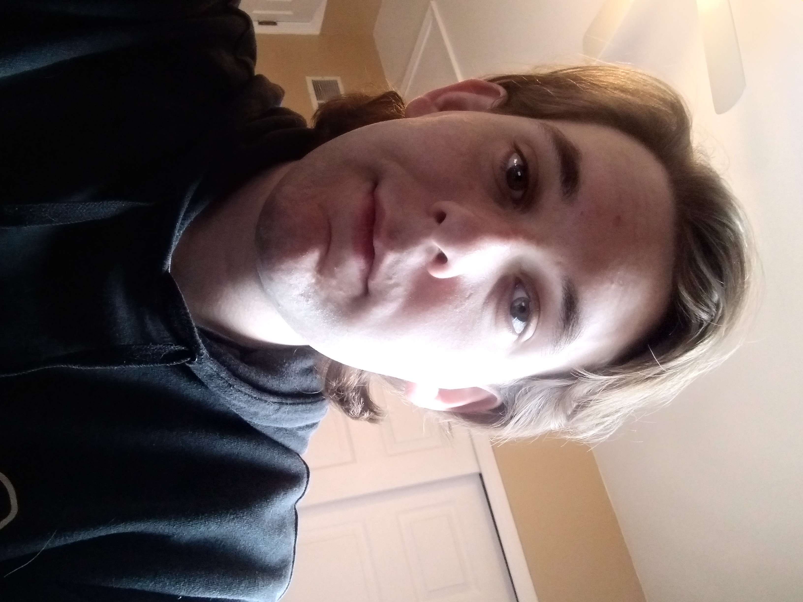

You can email me at: jacknkrejci@lewisu.edu
Discord Name: jkrejci
I am a Senior at Lewis University majoring in computer science, which I found an interest in, in my sophmore year of highschool, and I have a minor in math which I didn't realize I was even good at until college. I found it an interesting subject as it requires you to work with your creativity and be able to build something in a way humans have never done before. This is actually only my second year at Lewis though as I transferred over here from the College of Lake County which has its main campus in Grayslake Illinois. I have a brother named TJ, and my parents are John, and Julie, and have two golden retrievers named Cortland and Holly who always get furious with me whenever I have work to do. I also have a girlfriend named Jamie who I've been with since my Senior year of highschool who also happens to go to Lewis as well.
Some of my favorite hobbies growing up has been fishing, hockey, and football which I have been enjoying for as long as I've remember. Football and hockey has become more of a watching kind of thing now as I've been focusing more on school now and I don't plan on being a professional. I will still at least play a little hockey with one of my friends that I've always played it with growing up when we're not busy. When it comes to football I'm a Bears fan and always will be no matter how bad they always have to stink every year sadly, but things come around eventually so we'll see what happens. Fishing is something that I always liked to as it's a very relaxing thing to do which can be fun at the same time, and is certainly a great teacher of patience.
My favorite color is blue.